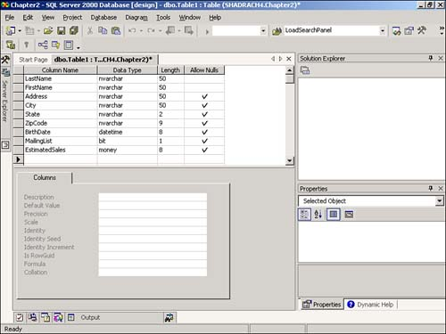

-
Right-click on the Tables node under the Chapter2 database and choose New Table. You will then be presented with the Table Designer. Now you are ready to add the columns.
To add a column, you need to set four immediate properties:
Column Name. This is the name of the column. Don't use spaces or special characters, but do use proper case, and make sure that the name you give the column makes sense for what it contains. For instance, if the column is for the last name of a customer, put LastName for the Name property of the column.
Data Type. Depending on the type of data that will be entered into the column, this will be one of the many valid data types for SQL Server, shown here in Table 2.1.
Table 2.1. SQL Server Data Types
Data Type
Description
bigint
Integer (whole number) data from -263 (-9,223,372,036,854,775,808) through 263\up6 - 1\up6 (9,223,372,036,854,775,807).
int
Integer (whole number) data from -2^31 (-2,147,483,648) through 231 - 1 (2,147,483,647).
smallint
Integer data from 215 (-32,768) through 215 - 1 (32,767).
tinyint
Integer data from 0 through 255.
bit
Integer data with either a 1 or 0 value.
decimal
Fixed precision and scale numeric data from -1038 + 1 through 1038 - 1.
numeric
Functionally equivalent to decimal.
money
Monetary data values from -263 (-922,337,203,685,477.5808) through 263 - 1 (+922,337,203,685,477.5807), with accuracy to a ten-thousandth of a monetary unit.
smallmoney
Monetary data values from -214,748.3648 through +214,748.3647, with accuracy to a ten-thousandth of a monetary unit.
float
Floating precision number data from -1.79E + 308 through 1.79E + 308.
real
Floating precision number data from -3.40E + 38 through 3.40E + 38.
datetime
Date and time data from January 1, 1753, through December 31, 9999, with an accuracy of three-hundredths of a second, or 3.33 milliseconds.
smalldatetime
Date and time data from January 1, 1900, through June 6, 2079, with an accuracy of one minute.
char
Fixed-length non-Unicode character data with a maximum length of 8,000 characters.
varchar
Variable-length non-Unicode data with a maximum length of 8,000 characters.
text
Variable-length non-Unicode data with a maximum length of 231 - 1 (2,147,483,647) characters.
nchar
Fixed-length Unicode data with a maximum length of 4,000 characters.
nvarchar
Variable-length Unicode data with a maximum length of 4,000 characters.
ntext
Variable-length Unicode data with a maximum length of 230 - 1 (1,073,741,823) characters.
binary
Fixed-length binary data with a maximum length of 8,000 bytes.
Varbinary
Variable-length binary data with a maximum length of 8,000 bytes.
image
Variable-length binary data with a maximum length of 231 - 1 (2,147,483,647) bytes.
cursor
A reference to a cursor.
sql_variant
A data type that stores values of various SQL Server-supported data types, except text, ntext, timestamp, and sql_variant.
table
A special data type that stores a result set for later processing.
timestamp
A database-wide unique number that is updated every time a row is updated.
uniqueidentifier
A globally unique identifier (GUID).
Tip

Unicode is a character-encoding standard that uses 16-bit code values. This standard is used worldwide to represent all the characters that are used in modern computing. Traditional character sets are the previous character-encoding standards-such as the Windows ANSI character set-that use 8-bit code values or combinations of 8-bit values to represent the characters used in a specific language or geographical region.
It is recommended that you use Unicode data types-nchar, nvarchar, and ntext-rather than their non-Unicode counterparts.
Also, use the variant length type data types whenever possible. Doing so will save disk space and save you from having to trim your values when you want to display the data in the fields.
Length. This varies depending on which data type you choose. For text data types, this will be the maximum length you expect to be entered into the column.
Allow Nulls. This specifies whether you will allow null values to be saved in the record for the column. This means that the user doesn't have to enter a value at all. This is sometimes a bad idea, such as when you have specific data that has to be entered, like Social Security Numbers.
For the first few columns in the table, enter the following data. You can see how the table will look in Figure 2.3.
Figure 2.3. Fields for your first table.

Column Name
Data Type
Length
Allow Nulls
LastName
nvarchar
50
Unchecked
FirstName
nvarchar
50
Unchecked
Address
nvarchar
50
Checked
City
nvarchar
50
Checked
State
nvarchar
2
Checked
ZipCode
nvarchar
9
Checked
BirthDate
datetime
8
Checked
MailingList
bit
1
Checked
EstimatedSales
money
8
Checked
Save the table by clicking on the X in the top-right corner of the Table Designer, and name the table tblCustomers when prompted. After you click the X, you are asked if you want to save the table. Then you are prompted for the name to save the table as.